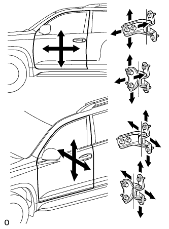

ПЕРЕДНЯЯ ДВЕРЬ > РЕГУЛИРОВКА |
| 1. ПРОВЕРЬТЕ ПЕРЕДНЮЮ ДВЕРЬ |
Для 5-дверных моделей:
Убедитесь, что измеренные зазоры на участках от A до P находятся в допустимом диапазоне.
| Область | Измерение | Область | Измерение |
| А | 3,60 - 6,60 мм (0,142 - 0,260 дюйма) | B | 6,50 - 9,50 мм (0,256 - 0,374 дюйма) |
| C | 3,70 - 6,70 мм (0,146 - 0,264 дюйма) | D | 3,70 - 6,70 мм (0,146 - 0,264 дюйма) |
| E | 3,70 - 6,70 мм (0,146 - 0,264 дюйма) | F | 4,60 - 7,60 мм (0,181 - 0,299 дюйма) |
| G | 2,5 - 6,5 мм (0,0984 - 0,256 дюйма) | H | -2,0 - 2,0 мм (-0,0787 - 0,0787 дюйма) |
| I | 3,0 - 6,0 мм (0,118 - 0,236 дюйма) | J | -1,5 - 1,5 мм (-0,0591 - 0,0591 дюйма) |
| K | 4,05 - 7,05 мм (0,159 - 0,278 дюйма) | L | 4,45 - 7,45 мм (0,175 - 0,293 дюйма) |
| M | 4,05 - 7,05 мм (0,159 - 0,278 дюйма) | N | 4,35 - 7,35 мм (0,171 - 0,289 дюйма) |
| O | 2,7 - 5,7 мм (0,106 - 0,224 дюйма) | P | -1,5 - 1,5 мм (-0,0591 - 0,0591 дюйма) |
Для 3-дверных моделей:
Убедитесь, что измеренные зазоры на участках от A до P находятся в допустимом диапазоне.
| Область | Измерение | Область | Измерение |
| А | 3,60 - 6,60 мм (0,142 - 0,260 дюйма) | B | 6,50 - 9,50 мм (0,256 - 0,374 дюйма) |
| C | 3,70 - 6,70 мм (0,146 - 0,264 дюйма) | D | 3,70 - 6,70 мм (0,146 - 0,264 дюйма) |
| E | 3,70 - 6,70 мм (0,146 - 0,264 дюйма) | F | 4,60 - 7,60 мм (0,181 - 0,299 дюйма) |
| G | 3.5 - 6,5 мм (0,138 - 0,256 дюйма) | H | -1,5 - 1,5 мм (-0,0591 - 0,0591 дюйма) |
| I | 2,7 - 5,7 мм (0,106 - 0,224 дюйма) | J | -1,5 - 1,5 мм (-0,0591 - 0,0591 дюйма) |
| K | 4,05 - 7,05 мм (0,159 - 0,278 дюйма) | L | 4,45 - 7,45 мм (0,175 - 0,293 дюйма) |
| M | 4,05 - 7,05 мм (0,159 - 0,278 дюйма) | N | 4,35 - 7,35 мм (0,171 - 0,289 дюйма) |
| O | 2,7 - 5,7 мм (0,106 - 0,224 дюйма) | P | -1,5 - 1,5 мм (-0,0591 - 0,0591 дюйма) |
| 2. ОТСОЕДИНИТЕ ПРОВОД ОТ ОТРИЦАТЕЛЬНОГО (-) ВЫВОДА АККУМУЛЯТОРНОЙ БАТАРЕИ |
| 3. ОТРЕГУЛИРУЙТЕ ПЕРЕДНЮЮ ДВЕРЬ |
|  |
С помощью SST ослабьте болты крепления петли со стороны кузова и отрегулируйте положение двери.
Затяните болты петель на кузове автомобиля.
Ослабьте болты крепления петли со стороны двери и отрегулируйте положение двери.
Затяните болты петель на двери.
 |
С помощью торцевого ключа "TORX" (T40) слегка ослабьте винты крепления защелки.
Отрегулируйте положение защелки, подбив ее с помощью молотка и латунного стержня.
С помощью торцевого ключа "TORX" T40 затяните винты крепления защелки.
| 4. ПОДСОЕДИНИТЕ ПРОВОД К ОТРИЦАТЕЛЬНОМУ (-) ВЫВОДУ АККУМУЛЯТОРНОЙ БАТАРЕИ |
| 5. ПРОВЕРЬТЕ КОНТРОЛЬНУЮ ЛАМПУ АВАРИЙНОГО СОСТОЯНИЯ SRS |
Проверьте контрольную лампу аварийного состояния SRS (Нажмите здесь).